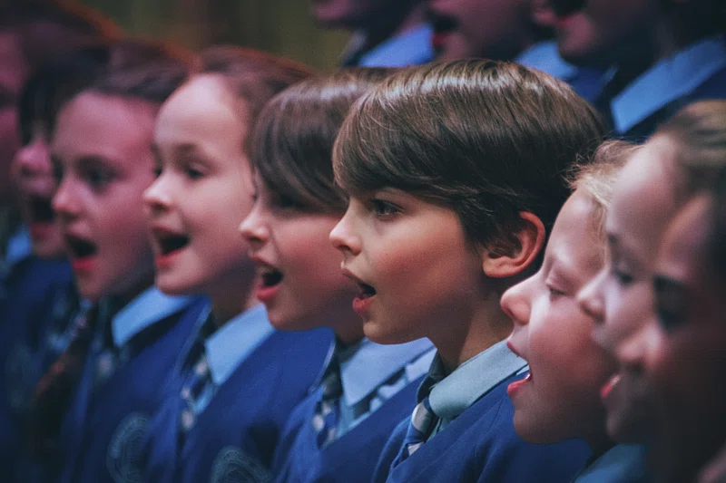
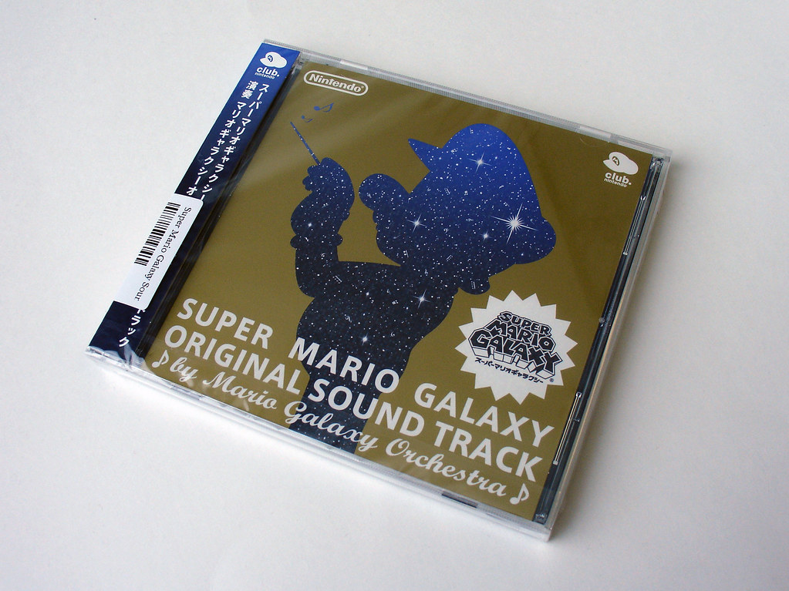
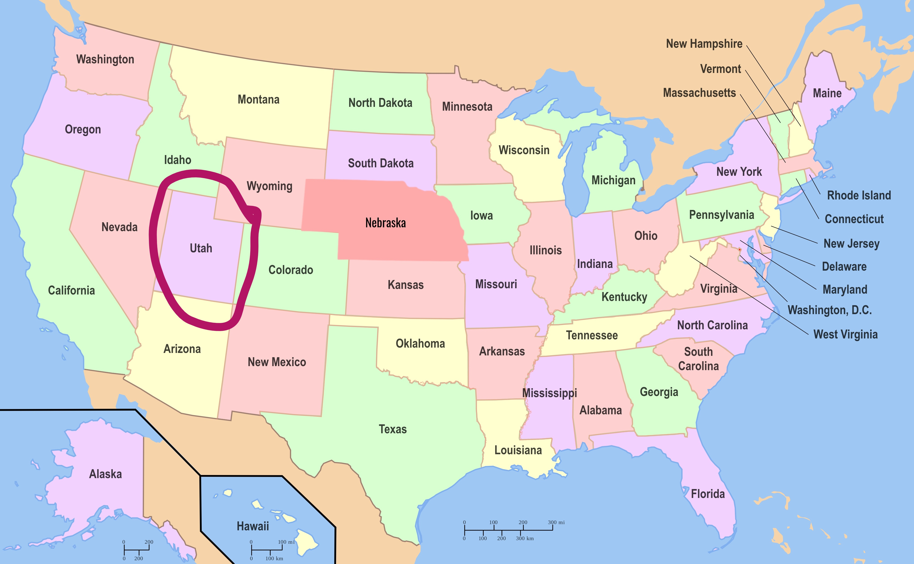
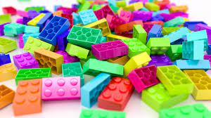

I'm a pretty weird guy, so here is a wonky list of some of my interesting tastes.
I LOVE Music. I play piano, I sing in a choir, and I listen to it on a regular basis.
On piano, I play a variety of songs, mainly from my piano book or scores of video games and movies. I've played piano since 2016 and have loved it ever since.

I sing with EYV Choirs, a wonderful choir where I have expanded my knowledge of music greatly and made great friends. Next July, we're taking a tour to Europe through Frankfurt, Prague, Vienna, and Salzburg. We mainly sing classical type music and obscure carols for our Christmas concert.

The music I mainly listen to is from video games, such as Super Mario and the Legend of Zelda. The instrumental themes in video games really appeal to me because they bring out a sense of environment and emotion that is very important with music. Plus, given that this music is designed to be played in the background of games for hours on end, it takes a long while to get bored of one particular song. Some of my favourites include:
I spend a majority of my free time either watching or playing video games. Here are some of my favourite individual games and franchises.

I love to read! I reread a lot of books and remember much of most of them, so do not challenge me to Harry Potter Trivia. Some of my favourite books include:
As stated above, I quite like playing music and video games, as well as reading books. Here's a couple more things I do in my free time.


I'm not the most well traveled person, but not being native to Canada, I have been through many of the States, with my extended family living mostly in Utah and my dad's education taking us to Missouri years ago. In 2018, my whole family flew to California to accompany my dad to his work conference, which he skipped much of to go to Disneyland, Legoland, Sea World, and the San Diego Zoo.
When my family isn't traveling to Utah to visit family, one of our more common trips we take is to Montana to visit Glacier National Park. The mountains in that area are gorgeous, and the woods and wildlife bring the area to life.

My favourite place in Alberta is Jasper National Park. My family loves hiking, and one of the hikes in Jasper we do most frequently there is the Valley of the Five Lakes (click link to see), a beautiful hike that takes you around, you guessed it, five lakes, all with different shades and vistas.
Given that I haven't been to too many places, there is a variety I would like to go to.

Given that they raised me, my parents would obviously be the first people on this list. They taught (and still teach) me to be a kind, productive person, and because I was homeschooled for the past 8 years, they played a major part in my education as well.
Several other family members have helped me become who I am today. My older sister Brooke has fueled my love for music through her example, my younger brother Andrew is always someone I can hang out with, and my little sister Hannah exemplifies kindess. My grandparents are also awesome, always suppourtive and kind when I need them.
Various other people such as teachers have nourished and grown my talents. both my piano and choir teachers help me to be better at my talents and encourage me along the way.
When I was a bit younger, my dream job was to be a LEGO designer, and although that would still be fun, google says it does not pay very well and so woudln't be the best option for me. Currently, it is my aspiration to become a physicist. What kind, I haven't decided yet, as all apects of physics interests me, but I love the idea of making monumental discoveries in the history of humanity. My dream colleges for this include Yale, MIT, Copenhagen, and Cambridge, as they have rich scientific histories and would likely give me vast oppurtunites (so a high grade on this project would be nice ;)
In this section I will detail what I did the day before I wrote this (Sep 14), and what a normal day looks life for me.
On an average weekday, I wake up. Pretty self explanitory, I know. But here's the thing: I wake up at 5:45am, just to get to a church class called seminary. In it, my class, my teachers, and I study the scriptures and interpret them to get messages from them. After seminary, I hurry home to eat a small breakfast, prepare my lunch for school, and catch the bus. I go to school, have english and computer science (where I am doing this assignment), and then eat lunch with friends. I then go to math and social studies, walk home, and do my daily chores, eat dinner, and then go to various extracurricular activities, such as piano, choir, and youth.
I woke up, although with a bit of trouble, and hastily got ready for seminary, not being able to find some stuff. My mom drove me, my sister, and a couple of our friends to the church building, where we went our seperate ways and had our lessons. I came home and made a small sandwich, with little breakfast, and raced to catch the bus with Brooke. After getting into school I greeted my friends in English class, where we first read a book for 15 minutes, and then watched Edward Scissorhands (which we are going to analyze) I walked a few meters to computing science, where I submitted my first porject to github and worked on this one while I waited for it to get into the system.
After eating lunch with a few of my friends and doing some math homework, I walked to math, where we studied factoring polynomials and got our test results from Tuesday. I then went to social studies, where we studied the digital divide and how technology affects globalization. After walking home, I watched the Nintendo Direct and got very excited for some new announcements. Having done that, I had neglected to prepare myself a dinner to eat after my piano lesson, so I quickly composed a sandwich.
I went to piano, practiced with my teacher, and then walked a short distance to the church where my choir is held. As it was the first rehearsal of the school year, we spent quite a bit of time getting to know new people and choosing some very pretty songs for our Christmas performance, including Carol of the Bells in Ukranian (I believe it is called Sce Drk), and a wonderful a capella piece called Sleep. I arrived home at around 9:30 pm, texted with a couple friends, took care of compost and recycling, showered, and went to bed.